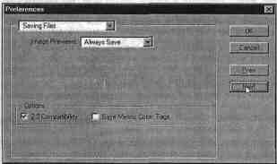

3.5. Понятие формата
Формат (File Format) в определенной
степени понятие бюрократическое, каждому приходилось заполнять всевозможные
анкеты. Анкета это и есть формат для организации данных, ее нудно заполнять,
зато потом легко обрабатывать.
И если информацию о личности человека
трудно свести к самой подробной анкете, то компьютерная информация иначе
существовать не может. Без формата информации не существует. Ее нельзя сохранить
и передать. Соответствие форматов это как разговор на одном языке. И если
информация представляется в другом формате, то обязательно требуется переводчик
в виде конвертора. Некоторые основные конверторы (форматы Photoshop 4.0, EPS,
JPEG, PICT File, Raw, Scitex CT и TIFF) для удобства пользователя являются
встроенными.
Форматы PSD, TIFF, TGA для RGB
Программа Adobe Photoshop ориентирована
на работу с цветовыми каналами RGB, поэтому основными форматами файлов
являются PSD, TIFF, Targa (TGA).
Формат PSD (файлы данного формата имеют
расширение .PSD) является внутренним для программы Adobe Photoshop. Он
поддерживает все типы изображений, от черно-белых штриховых до полноцветных
CMYK. Теоретически формат может содержать неограниченное количество
пользовательских слоев, а каждый слой может содержать до 24 каналов.
Формат PSD устанавливается по
умолчанию для всех вновь создаваемых документов.
Если в своей работе вы используете слои,
то для их сохранения стандартных форматов пока не существует. При сохранении
такого документа в другом формате слои будут слиты. Для конечного результата
это нормально, а для промежуточного придется слои оформлять в отдельные файлы
(не забыв, конечно, сохранить документ в формате Adobe Photoshop!).
Если документ предназначается для
интегрирования в программу, которая не имеет конвертора версии 4.0, а только
версии 2.5, то вы должны включить опцию совместимости с предыдущим форматом (или
убедиться в ее включенности, так как эта опция при первом запуске программы
включена по умолчанию).
1. Откройте меню File (Файл), выберите
команду Preferences (Установки), затем команду Saving Files... (Сохранение
файлов...).

Рис. 3-11. В диалоговом окне Preferences
(Установки) с разделом Saving Files (Сохранение файлов) можно определить
совместимость с предыдущей версией программы
3. В открывшемся диалоговом окне
Preferences (Установки) с разделом Saving Files (Сохранение файлов) отключите
опцию 2.5 Format Compatibility (Совместимость с 2.5).
4. Нажмите кнопку OK (Да).
Эта установка при сохранении документа в
формате версии 4.0 обеспечит сохранение дополнительной информации, которой
смогут воспользоваться программы, способные прочесть документы формата Adobe
Photoshop 2.5 (исходная информация игнорируется программами).
Последнее замечание означает, что за
универсальность надо платить: в одном и том же документе часть информации
дублируется, что приводит в увеличению размера файла (причем, довольно
значительно до 50%). Поэтому стоит сразу обратить внимание на эту опцию. Если
вам не нужна постоянная совместимость форматов, то указанную опцию следует
отключить и включать только по мере необходимости.
Формат TIFF (Tagged Image File Format)
был создан в качестве универсального формата для изображений с цветовыми
каналами (файл с расширением .TIF). Важным достоинством этого формата является
его переносимость на
разные платформы (при сохранении вы
можете создать документ, доступный для чтения на компьютерах, совместимых с IBM
PC или Macintosh), он импортируется всеми настольными издательскими системами,
его можно открыть и с ним работать практически в любой программе точечной
графики.
Этот формат имеет самый широкий диапазон
передачи цветов: от монохромного до 24-битовой модели RGB (TrueColor) и
32-битовой цветоделен-ной модели CMYK.
Кроме того, формат может включать и схемы
сжатия для уменьшения размера файла (при сохранении доступна опция LZW
Compression (LZW Уплотнение)), что является немаловажным параметром для работы с
полноцветными изображениями большого размера.
Этот формат имеет открытую архитектуру,
это значит, что в формате предусмотрена возможность в заголовке объявлять
информацию о типе изображения, а значит и записывать можно будет то, что сейчас
еще не известно. (Как нотная тетрадь не знает, что на ней будет
записано.)
К примеру, в формате TIFF могут
сохраняться сопроводительные подписи, стандарт которых разработан Ассоциацией
газет Америки (NAA) и Международным советом телекоммуникаций прессы (IPTC) для
идентификации передаваемых текстов и изображений.
На эту возможность следует обратить
внимание и вам. При передаче изображений заказчикам, в издательства, в другие
руки неплохо сопровождать их достаточной информацией о содержании, необходимой
обработке, авторских правах и так далее. Чтобы прочесть или записать такую
информацию о файле, следует обратиться к команде File Info... (Информация о
файле...) из меню File (Файл).
К сожалению, достоинства, как правило,
основа для недостатков: универсальность, гибкость и открытость формата TIFF
приводит к неограниченному разнообразию вариантов формата. Поэтому лучше всего
сначала проверить совместимость на простых файлах.
Формат Truevision TARGA (расширение файла
.TGA) был разработан в большей степени для видеоизображений (он максимально
приспособлен к телевизионным стандартам), но получил распространение и в
качестве стандарта сохранения графической информации.
Формат PCX
Формат, разработанный фирмой Z-Soft для
программы PC PaintBrush, является одним из самых известных, и практически любое
приложение, работающее с графикой, легко импортирует его. Формат неплох для
штриховых изображений и изображений с индексированными цветами, поскольку
несколько упрощен по сравнению с TIFF. Он содержит только один канал. Есть и
другие недостатки, которые препятствуют использованию этого формата для
профессиональной работы с цветом.
Формат BMP
Формат предназначен для Windows, и
поэтому поддерживается всеми приложениями, работающими в этой среде. Он
использует только индексированные цвета, не зависим от платформы, не
поддерживает каналы. Для профессиональной работы с цветом мало пригоден.
ФорматJPEG
Формат JPEG (Joint Photographic Experts
Group) предназначен для сохранения точечных файлов со сжатием. Сжатие по этому
методу уменьшает размер файла от десятых долей процента до ста раз (практически
диапазон уже:
от 5 до 15 раз), но сжатие в этом формате
происходит с потерями (в большинстве случаев эти потери находятся в пределах
допустимых). Распаковка JPG-файла происходит автоматически во время его
открытия. В каталоге \TUTORIAL, который создается при инсталлировании программы,
вы можете найти несколько файлов в этом формате.
Формат RAW
Формат RAW обычно представляет собой файл
из последовательности чисел (байтов), описывающих цветовую информацию, и
предназначается для передачи изобразительной информации между разными
программами и платформами. Формат RAW, который использует Adobe Photoshop,
включает еще дополнительную информацию о каналах, рядах и колонках, глубине
цвета и типе изображения (Bitmap (Битовый), Grayscale (Градации серого), Duotone
(Дуплекс), Indexed Color (Индексированный цвет), RGB, CMYK, L*a*b и Multichannel
(Многоканальный)).
Формат Scitex CT
Формат Scitex CT (Continuous Tone)
применяется для высококачественной обработки цветных изображений в моделях RGB
или CMYK, а также изображений в градациях серого цвета.
Это, конечно, далеко не полный список.
Существуют и применяются множество других форматов, но вы познакомились с самыми
распространенными.